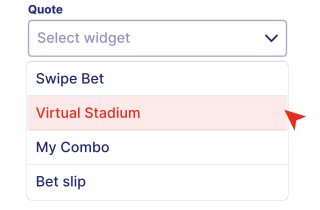
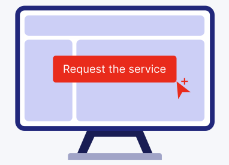
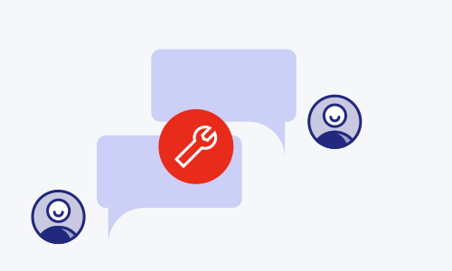
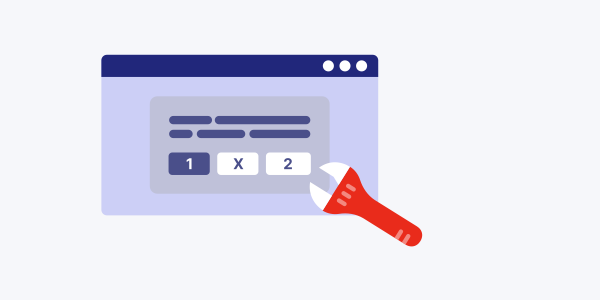
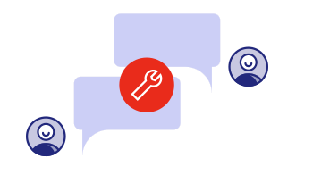
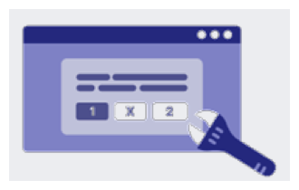
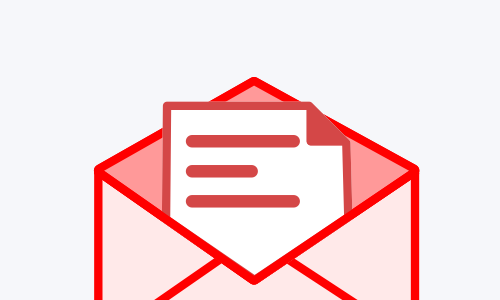

PROCESS FLOW
Sports Page Solutions Widgets






uswidgets_request

1A · SALES REPS
This is the same Salesforce step for a new client and for an existing client activating Sports Page Solutions Widgets. Skip opening an account when the client is already in Salesforce.
Open a new account via Salesforce.
Create a new opportunity with a Quote where Sports Page Solutions Widgets is chosen.
Create a new opportunity, or amend an existing opportunity, with a Quote where Sports Page Solutions Widgets is chosen.
Request the service via the “Service Administration” button on the Opportunity.
Finish the process by clicking Finish.
A Jira ticket is created automatically for the BETI team. It is available from the link on the opportunity. Put the label uswidgets_request on the ticket so it shows on the dedicated board.
1A · BETI
Once Jira is created, BETI updates the ticket fields: assignee, watchers, and labels.
Important. Once the ticket is created from Salesforce with the requested widgets, Support enables all available widgets for the required sport by default. Confirm the set against the showcase of all available widgets.
After submission, the BET team prioritises and activates products within 3–5 business days.
When the ticket is resolved, the Jira comment contains:
The ticket is then reassigned to the Sales Rep.
Sales notifies the client of the setup, using the comment BETI left on the resolved Jira:
Sales closes the ticket once the client is informed.
1B · SALES REPS
Use this path only for an existing client and an existing product — bug fixes, improvements, or domain whitelisting. A new product activation is flow 1a, including for existing clients.
The client reports the technical issue to Sales. Sales forwards it to Support by email.
The client reports the issue to Support directly. Once Support has the request, the ticket steps are the same as after a Sales forward.
1B · BET TEAM / SUPPORT
Support creates a ticket using the standard US widgets template and sets the fields as follows:
After submission, the BET team prioritises and provides a resolution within 3–5 business days.
Example ticket: BETI-6093.
Once the ticket is solved, Sales notifies the client of the fix.